To Auckland, and Northern North Island, New Zealand!
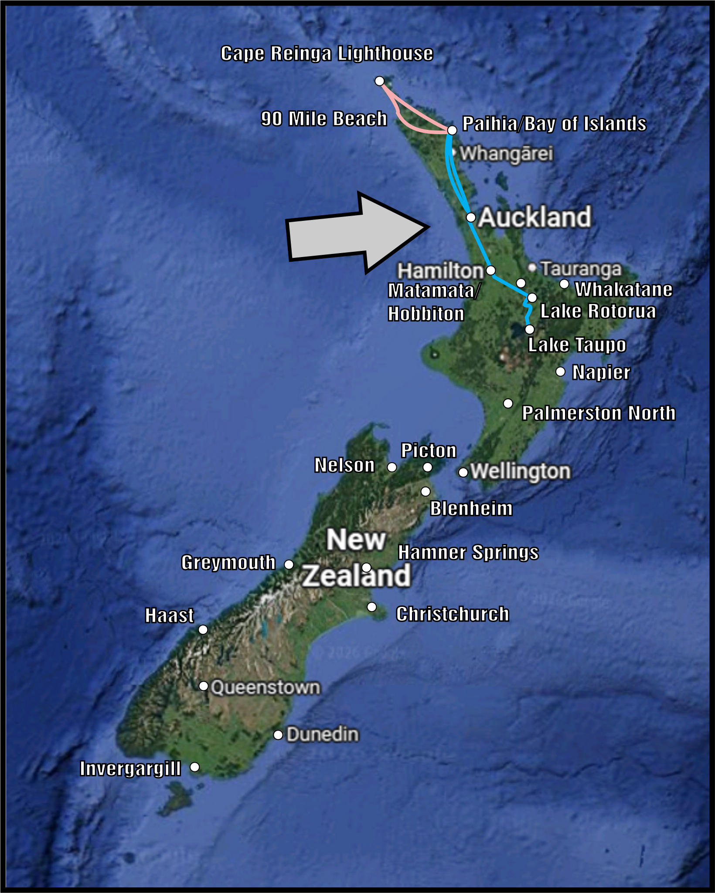
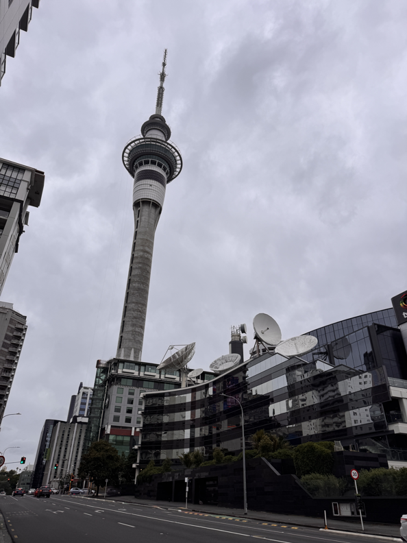
Met the local SCA for Rapier Practice!
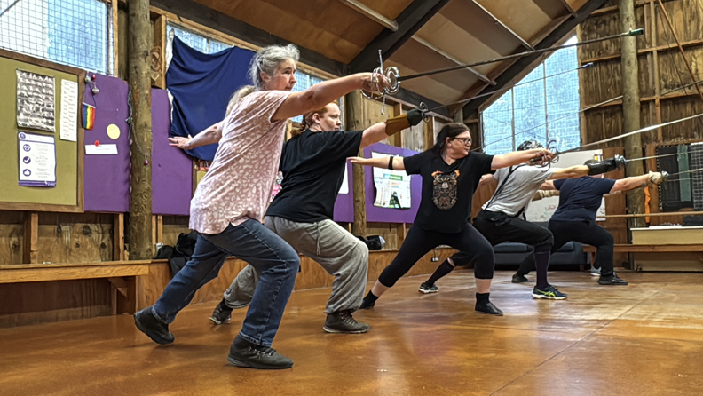
WETA Unleashed
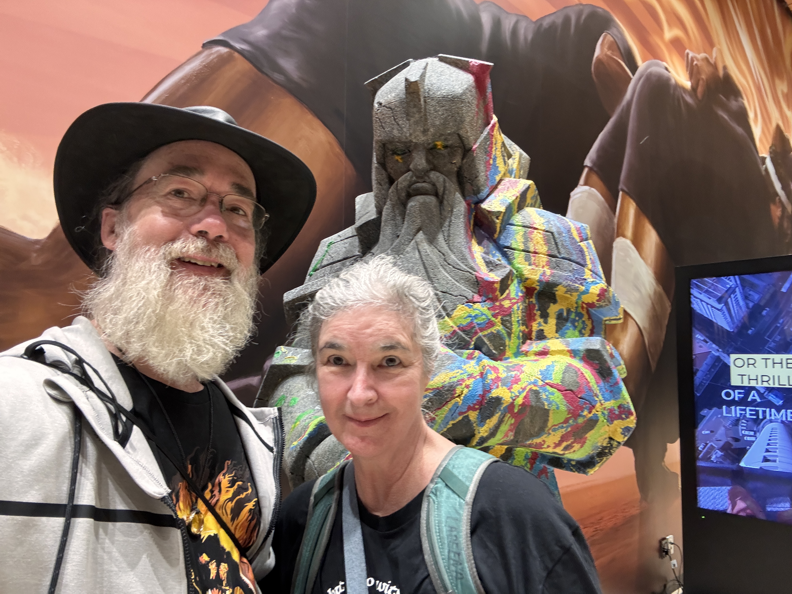
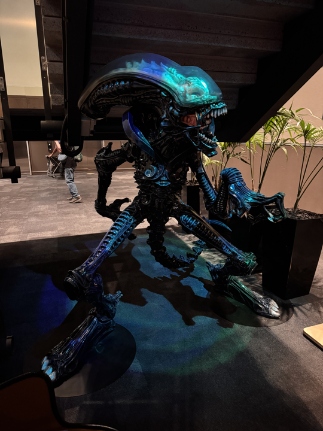
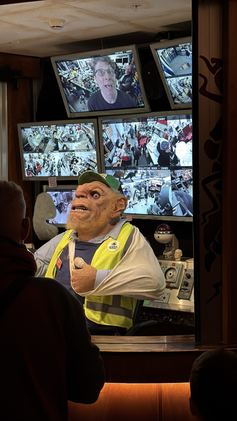
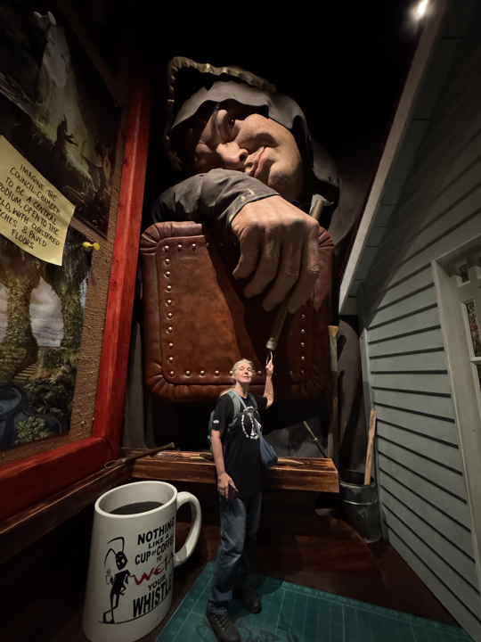
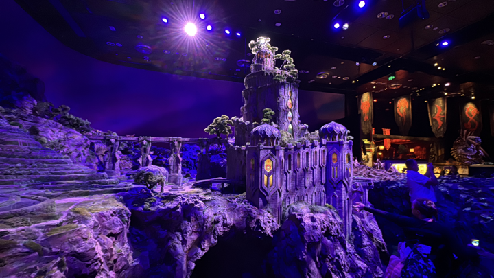
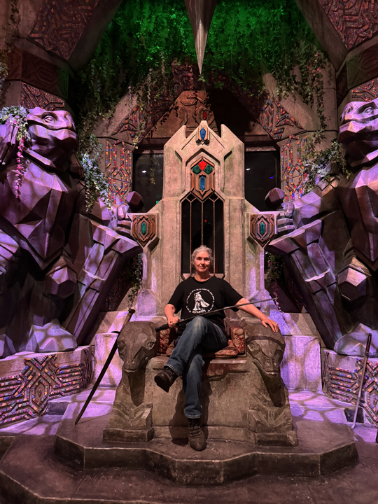
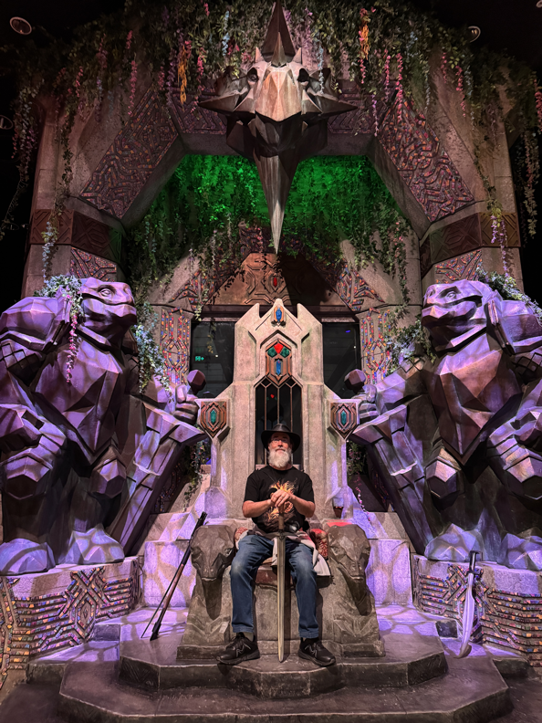
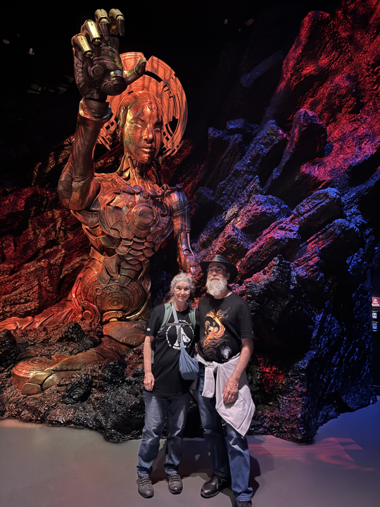
Took the Bus to Paihia, where we took another van tour to several places including the Lighthouse at the Northernmost point on the North Island!
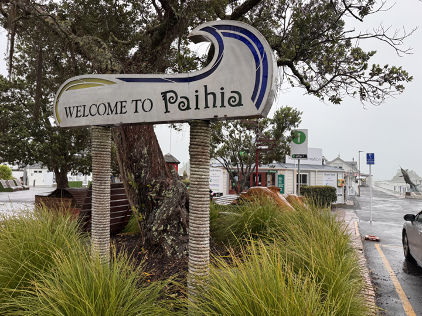
Stopped at a Maori artist center.
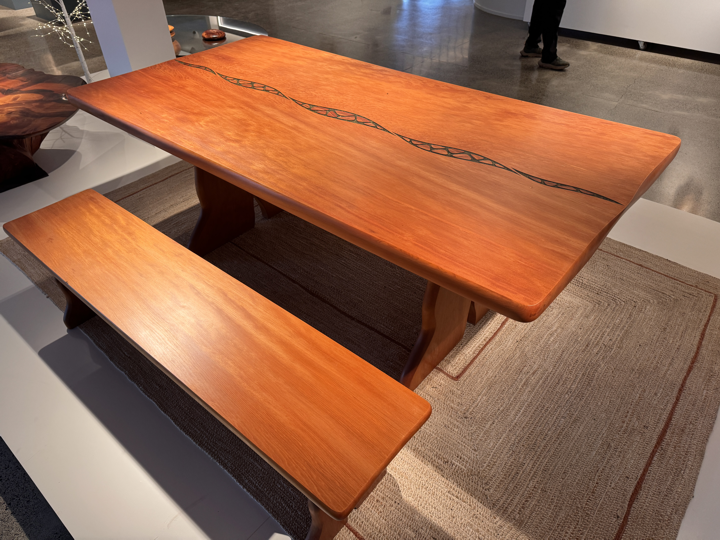
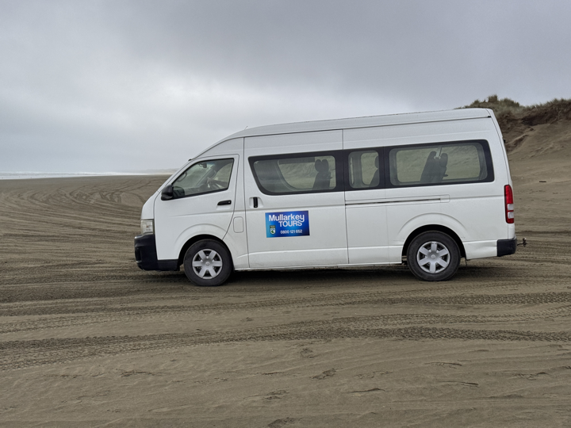
Visited the West Coast: "90 Mile Beach" - measured by taking 3 days on horses, and horses travel 30 miles/day, except it's much less distance due to it being on sand,
so it's more like 60 mile beach.
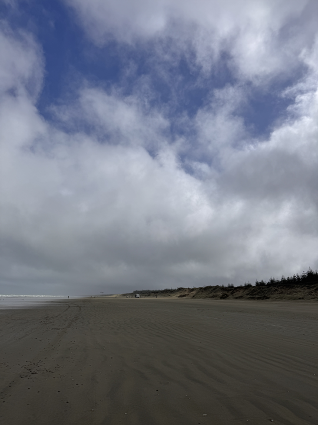
Wild Horses!
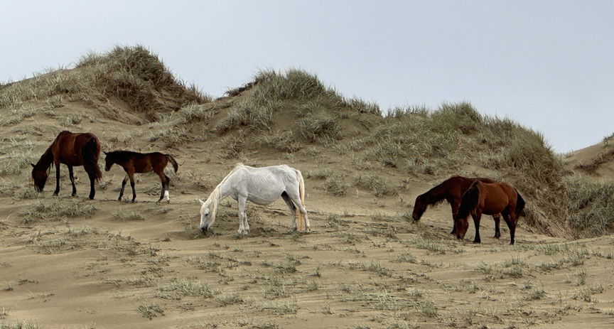
Murimotu North Cape
Cape Reinga Lighthouse - in the fog
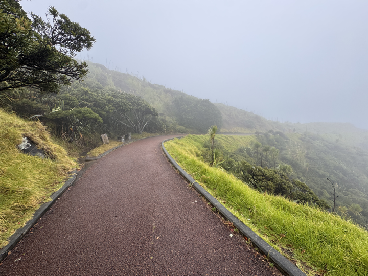
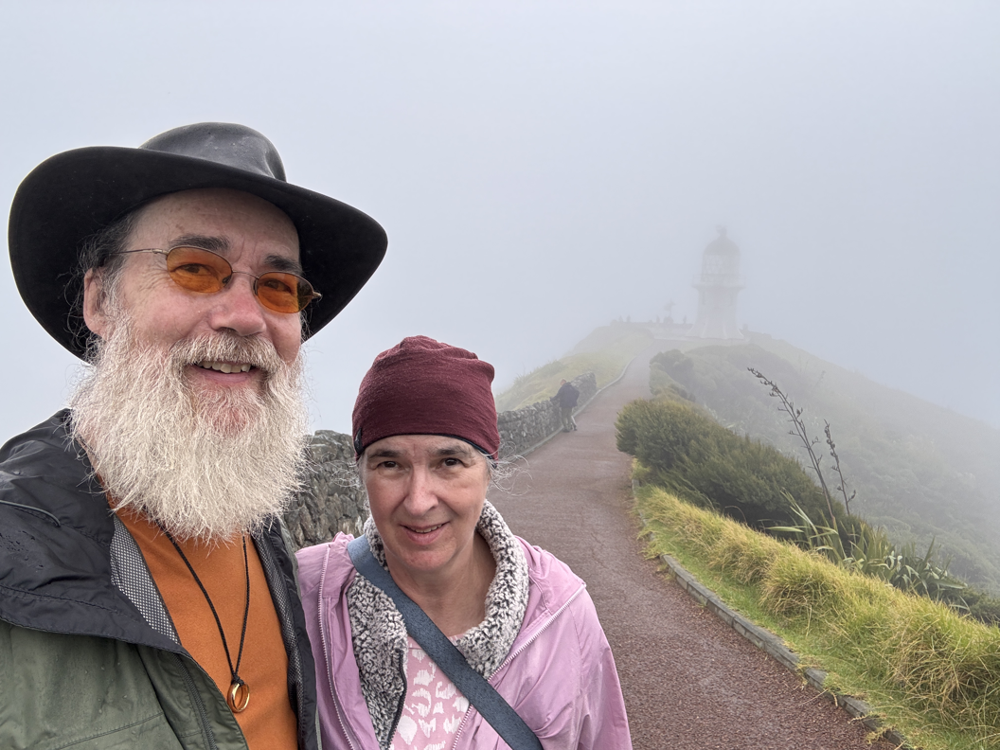
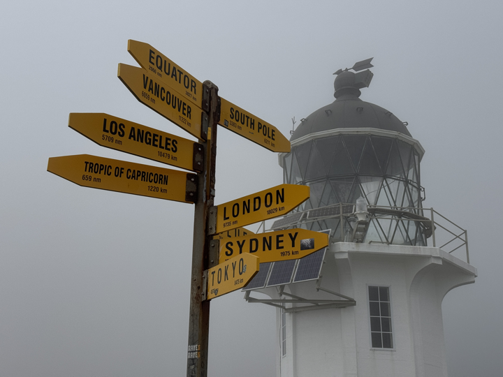
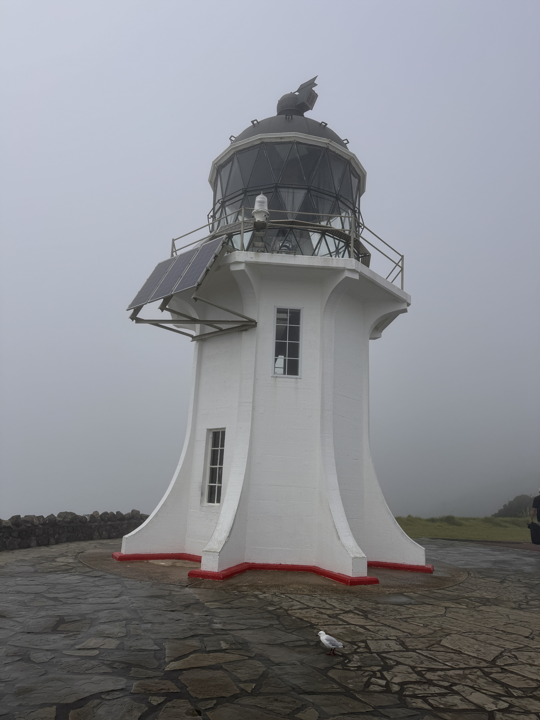
Then we visited Sand Dunes and ate our lunch.
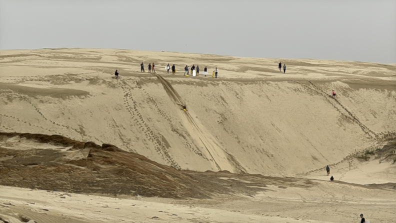
Also stopped at Cable Bay on the East Coast.
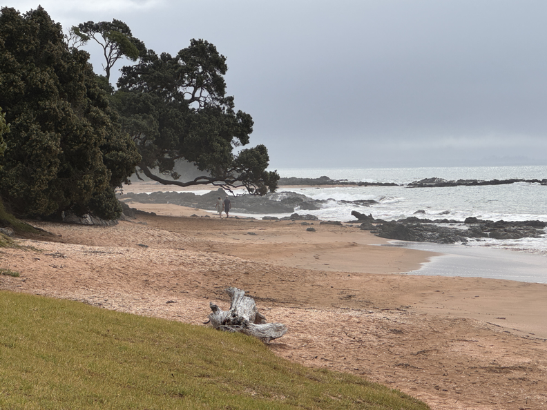
Back to Paihia for Pizza and Beers!
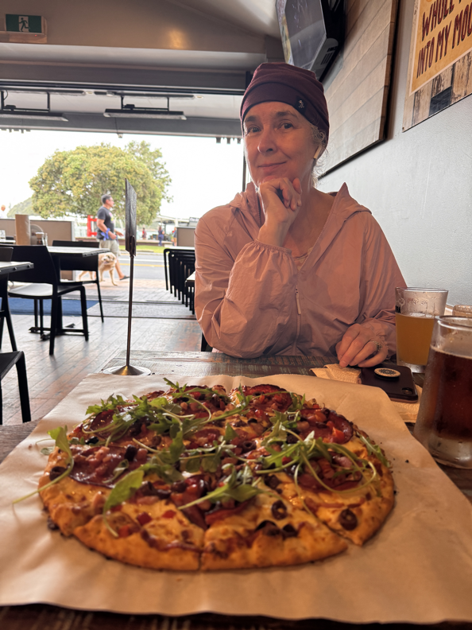